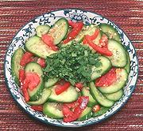

|
Cucumber Salad, DaiChina, Yunnan, Dai | ||||
| Makes: Effort: Sched: DoAhead: |
14 oz ** 35 min Yes |
An interesting salad from the Dai people of the southern tip of Yunnan. It is made in many variations, see Comments | |||
|
1 1 3 ----- 1 1/3 1 1/2 ----- ar |
# t oz --- cl in T --- |
Cucumbers (1) Salt Tomato -- Dressing Garlic Ginger Thai Chili (2) Rice Vinegar -- Garnish Cilantro |
Make - (35 min - 15 min work)
|